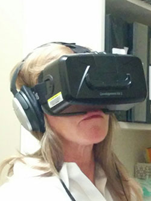
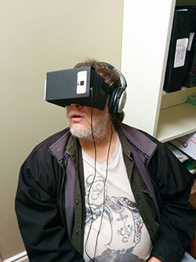

Pain Studies Lab · SFU
Academic research
MSc research at the intersection of human–computer interaction and healthcare — testing whether low-cost mobile VR can distract patients from chronic pain as well as a high-end headset.
Master's thesis
The effectiveness of mobile virtual reality as a means for pain distraction
Research shows VR is a useful medium for pain distraction, especially in acute pain. Our earlier studies in the Pain Studies Lab, SIAT, SFU found VR's effectiveness in chronic-pain management using traditional high-tech VR systems like Oculus Rift. My research tests the effectiveness of the low-cost and more widely accessible mobile VR systems like Cardboard VR.
Two studies on Cardboard VR
Study 01
The effectiveness of Cardboard VR with chronic-pain patients
Cardboard VR gave patients real pain distraction — though the Rift's effect on remembered pain was stronger.
This repeated-measures study in a clinical setting examined how effective Cardboard VR is with actual pain patients playing a VR game, compared to an Oculus Rift. 30 participating patients volunteered to play InMind on the Rift and the Cardboard. I measured Present Pain Intensity (PPI) and Retroactive Pain Intensity (RPI — pain in the last 10 minutes). For RPI the effect of the Rift was profound, and the difference between the two HMDs was significant. Immersion and single-measure pain distraction were also significant. However, Cardboard was still capable of providing significant pain distraction compared to the pre-VR (no VR) condition.
Peer-reviewed papers:
01A. Amin, D. Gromala, and C. Shaw, “Immersion in Cardboard VR Compared to a Traditional Head-mounted Display,” 2016.
02A. Amin, D. Gromala, and S. Pekcetin, “Use of Mobile Virtual-Reality in Chronic Pain Self-Management: Report of a study in clinical settings,” 2016.


Study 02
Immersion in mobile VR compared to a traditional HMD
Cardboard VR reached an acceptable level of immersion, despite its small screen and simplicity.
The study aimed to find the difference in levels of immersion between a Cardboard VR and a traditional head-mounted display — the Oculus Rift DK2. Three groups of participants played Cryoblast, a VR pain-management game, on Cardboard, Oculus Rift and Desktop (control). Jennett et al.'s Immersive Experience Questionnaire was used to measure immersion. The results showed that Cardboard VR, despite its simplicity and small screen size, is capable of providing an acceptable level of immersion compared to the Oculus Rift's larger screen. However, examining the underlying factors of immersion (control, real-world dissociation, and so on) showed differences between the two viewers.
Peer-reviewed publications
01A. Amin, D. Gromala, and C. Shaw, “Immersion in Cardboard VR Compared to a Traditional Head-mounted Display,” 2016.
02A. Amin, D. Gromala, and S. Pekcetin, “Use of Mobile Virtual-Reality in Chronic Pain Self-Management: Report of a study in clinical settings,” 2016.
03A. Amin, D. Gromala, X. Tong, and C. Shaw, “Immersion in Cardboard VR Compared to a Traditional Head-Mounted Display,” in Virtual, Augmented and Mixed Reality, S. Lackey and R. Shumaker, Eds. Springer International Publishing, 2016, pp. 269–276.
04Amin, A., Gromala, D. (2016). “Immersion in Cardboard VR Compared to a Traditional Head-Mounted Display,” in the 22nd Medicine Meets Virtual Reality Conference.
05Gromala, D., Tong, X., Shaw, C., Amin, A., Ulas, S., Ramsay, G. (2016). “Mobius Floe: an Immersive Virtual Reality Game for Pain Distraction,” SPIE Proceedings, Vol. 9392, San Francisco.
06Tong, X., Amin, A. M., Gromala, D., Choo, A. (2015). “The Design of an Immersive Mobile Virtual Reality Serious Game in Cardboard Head-Mounted Display for Pain Management,” in 5th EAI International Symposium on Pervasive Computing Paradigms for Mental Health.
07Tong, X., Amin, A. M., Gromala, D., Shaw, C. (2015). “The Virtual Meditative Walk: an Immersive Virtual Environment for Pain Self-modulation through Mindfulness-based Stress Reduction Meditation,” in Virtual, Augmented and Mixed Reality (pp. 388–397). Springer International Publishing.
08Mahmud, H., Amin, A. M., Ali, M. E., Hashem, T., & Nutanong, S. (2013). “A Group Based Approach for Path Queries in Road Networks,” in Advances in Spatial and Temporal Databases (pp. 367–385). Springer Berlin Heidelberg.
09Mahmud, H., Amin, A. M., Ali, M. E., & Hashem, T. (2012). “Shared Execution of Path Queries on Road Networks,” arXiv preprint arXiv:1210.6746.
Research poster
A study comparing immersion in low-cost Cardboard VR against the Oculus Rift DK2 and a desktop control, measured with the Immersive Experience Questionnaire. Winner of the Best Poster Award at the Medicine Meets Virtual Reality (MMVR) 2026 conference.